[État Indépendant du Complex]
Frenni's Fazclaire NightClub
• CPX-055 :
Un bijou de technologie
❯ [Récupération sûr site]
Rapport de Récupération
Date: ██/██/████
Lieu: Nightclub "Frenni's Fazclaire Nightclub"
Agent en charge: Dr. █████████
Le "Frenni's Fazclaire Nightclub", étant abandonné situé en █████████.
Il présente une détérioration substantielle dans sa structure et son aménagement.
Les murs portent des marques de dégradation, avec des fissures et des éraflures visibles sur les surfaces
autrefois lisses. Les sols montrent des signes de déformation et de débris, créant une surface inégale,
quasi impraticable.
La dégradation du mobilier est évidente, avec des morceaux de meubles cassés et dispersés à travers les
espaces.
Les luminaires autrefois suspendus au plafond sont endommagés, certains pendouillant de manière
déséquilibrée, d'autres totalement absents. Les zones dédiées aux divertissements, sont maintenant en
désordre, avec des équipements endommagés et des éléments de décoration en mauvais état.
L'éclairage, devenu irrégulier, contribue à l'atmosphère délabrée. Les fluctuations de luminosité ajoutent à
l'impression d'abandon,
créant des zones d'ombre et de lumière incohérentes dans tout l'espace. La combinaison de la détérioration
physique et de l'obscurité ambiante génère une ambiance austère et désolée.
Les animatroniques ont été retrouvés détruits, révélant une structure métallique torturée et contorsionnée.
Les surfaces, désormais corrodées par la rouille.
Détails des dégats :
• CPX-055-1: Son torse révèle une mécanique déchirée et manquant un oeil.
• CPX-055-2: Étalée par terre suite à la perte de ses jambes et une oreille arrachée.
• CPX-055-3: La tête est partiellement détachée et une jambe manquante.
• CPX-055-4: Un de ses bras arraché, laissant des câbles pendouiller.
• CPX-055-5 : Ses deux mains manquantes et la tête ouverte.
Remarque :
Une approche prudente a été nécessaire en présence des animatroniques, étant donné leur état de dégradation
extrême.
Une investigation plus approfondie est recommandée pour déterminer toute implication potentielle d'anomalies
ou d'événements paranormaux.
[FIN DU RAPPORT]
❯ [Rapport de réparation]
Rapport de réparation
Date: ██/██/████
Lieu: Laboratoire Complex
Agent en charge: Dr. █████████
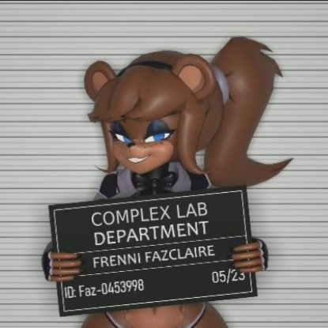
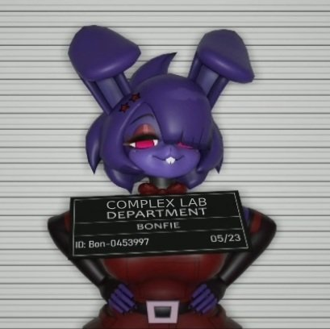
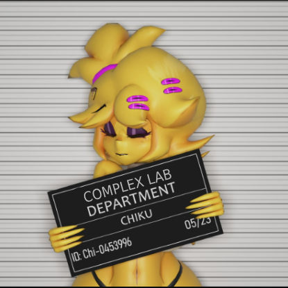
Photos prises après réparations
Après décision du directeur, des réparations ont été entreprises sur les animatroniques, Fexa, Chiku, Frenni et Bonfie et Marie.
Les éléments suivants détaillent les travaux effectués sur chaque animatronique :
• CPX-055-1: Le torse ouvert a été refermé avec la réparation de la structure métallique interne et la réinstallation des éléments de revêtement endommagés.
• CPX-055-2: Les jambe manquantes ont été restaurées en remplaçant les parties manquantes par des composants neufs.
• CPX-055-3: La tête partiellement détachée a été soigneusement remise en place, et les mécanismes internes ont été réalignés, la jambre manquante remplacée.
• CPX-055-4: Le bras droit a été réparé avec la réintégration des composants mécaniques manquants et la restauration des revêtements extérieurs.
Les câbles exposés ont été correctement reconnectés.
• CPX-055-5: Les mains manquantes ont été restaurées en les remplaçant par des composants neufs. La réparation du trou dans la tête a été faite ensuite.
Après les réparations matérielles, les animatroniques on subi une vérification complète de leurs systèmes respectifs et leur mémoire a été nettoyée.
(Certains virus présents dans les OS des animatroniques ont été supprimés.)
Une aile du secteur █████████ doit être aménagées pour accueillir un laboratoire spécialisé et les futurs quartiers des animatroniques.
[FIN DU RAPPORT]
• Frenni (2m10)
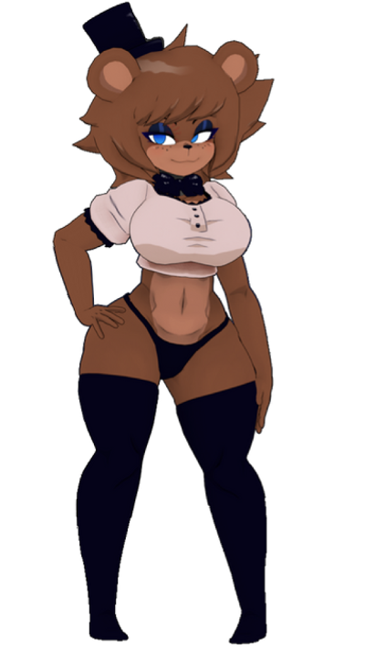
[CPX-055-1]
Nom : Frenni
Apparence physique :
CPX-055-1 est une animatronique ourse anthropomorphe de grande taille, mesurant 2m10 de
hauteur.
Son pelage est d'un marron profond et luxueux.
Ses yeux sont d'un bleu glacial, reflétant une lueur hypnotique.
Elle arbore un haut blanc moulant qui mettant en valeur sa poitrine généreuse et ses
courbes.
Sa culotte noires souligne ses hanches et son derrière.
Pour ajouter une touche de style, elle porte un chapeau et un noeud papillon assorti qui ajoute
du mystère à son apparence.
Ses longs collants noirs, moulants et soyeux, accentuent la sensualité de ses jambes.
Capacités techniques :
- Mouvements fluides et réalistes pour simuler des actions sensuelles.
- Interaction vocale avec des enregistrements de voix séductrice ou provocatrice.
- Capteurs tactiles qui permettent de réagir aux contacts physiques.
- Fonctionnalité de chauffage interne pour créer une sensation de chaleur lors des contacts.
- Éclairage subtil pour mettre en valeur les parties du corps de manière suggestive.
- Yeux rétroéclairés ayant une possibilitée de vision nocturne.
- Fonctionnalité de stimulation vibrante dans certaines parties du corps.
- Système de reconnaissance faciale pour ajuster son comportement en fonction des
utilisateurs.
• Bonfie (2m15)
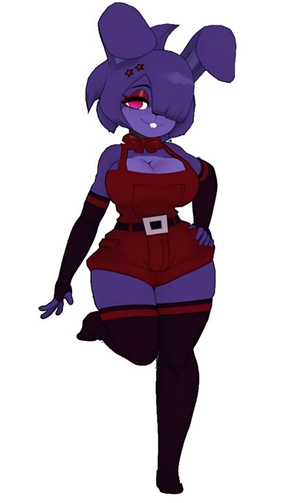
[CPX-055-2]
Nom : Bonfie
Apparence physique :
CPX-055-2 est une animatronique lapine anthropomorphe, mesurant 2m15 de hauteur.
Son pelage est d'un violet vibrant.
Ses yeux sont d'un magenta ensorcelant.
Elle porte une robe rouge extrêmement serrée qui épouse les courbes de son corps.
Elle arbore aussi un noeud papillon assorti et de longs collants et manchettes noirs,
moulants.
Capacités techniques :
- Mouvements fluides et réalistes pour simuler des mouvements sensuels et gracieux.
- Interaction vocale avec une voix suave et envoûtante.
- Capteurs tactiles sensibles pour réagir aux contacts, procurant une expérience tactile
réaliste.
- Système de chauffage interne pour générer une sensation de chaleur agréable lors des contacts
physiques.
- Éclairage subtil qui met en valeur les parties du corps de manière suggestive.
- Yeux rétroéclairés ayant une possibilitée de vision nocturne.
- Fonctionnalité de stimulation vibrante dans certaines parties du corps
- Système de reconnaissance faciale avancé pour ajuster le comportement de Bonfie en fonction
des utilisateurs.
• Chiku (2m)
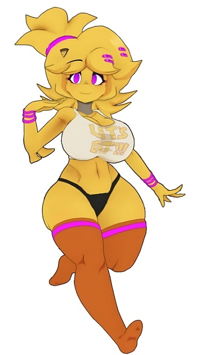
[CPX-055-3]
Nom : Chiku
Apparence physique :
CPX-055-3 est une animatronique poulette anthropomorphe, mesurant 2m de hauteur.
Son plumage est d'un jaune éclatant.
Ses yeux sont d'un magenta envoûtant.
Elle porte un soutien-gorge moulant blanc qui met en valeur sa poitrine généreuse.
Sa culotte noire, ajustée, accentue les courbes de ses hanches et de son derrière.
Pour compléter son ensemble, elle porte des longs collants oranges qui mettent en valeur ses
jambes de manière alléchante.
Capacités techniques :
- Mouvements fluides et gracieux pour simuler des mouvements sensuels.
- Interaction vocale avec une voix douce et séduisante.
- Capteurs tactiles sensibles pour répondre aux contacts, procurant une sensation de
réalisme.
- Système de chauffage interne pour générer une chaleur agréable lors des interactions
physiques.
- Éclairage subtil pour mettre en valeur les parties du corps de manière suggestive.
- Yeux rétroéclairés ayant une possibilitée de vision nocturne.
- Fonctionnalité de stimulation vibrante dans certaines parties du corps.
- Système de reconnaissance faciale avancé pour adapter le comportement de Chiku en fonction des
utilisateurs.
• Fexa (2m)
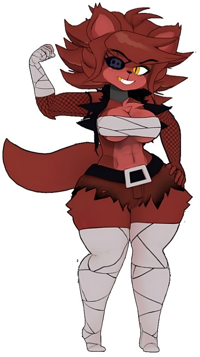
[CPX-055-4]
Nom : Fexa
Apparence physique :
CPX-055-4 est une animatronique renarde anthropomorphe, mesurant 2m de hauteur.
Son pelage est d'un rouge flamboyant, attirant les regards.
Ses yeux sont d'un jaune perçant, évoquant une intensité sauvage et violente.
Elle incarne le rôle d'une pirate, portant une canine en or, et un cache-oeil qui ajoute une
touche de mystère à son allure.
CPX-055-4 est vêtue principalement de bandages serrés autour de sa poitrine, de ses jambes et de ses
avant-bras, soulignant son côté sauvage et brutal.
Elle porte un bas rouge foncé déchirée, et des manchettes en grillage noir qui renforcent son
apparence rebelle.
Capacités techniques :
- Mouvements forts et rapides pour simuler des mouvements sauvages et violents.
- Squelette interne en Titane renforcé pour résister aux chocs et sa violence.
- Interaction vocale avec une voix rauque et provocatrice.
- Capteurs tactiles sensibles pour réagir aux contacts physiques.
- Système de chauffage interne pour générer une chaleur lors des interactions physiques.
- Éclairage subtil pour mettre en valeur les parties du corps d'une manière suggestive.
- Yeux rétroéclairés ayant une possibilitée de vision nocturne.
- Fonctionnalité de stimulation vibrante dans certaines parties du corps.
• Marie 1m90)
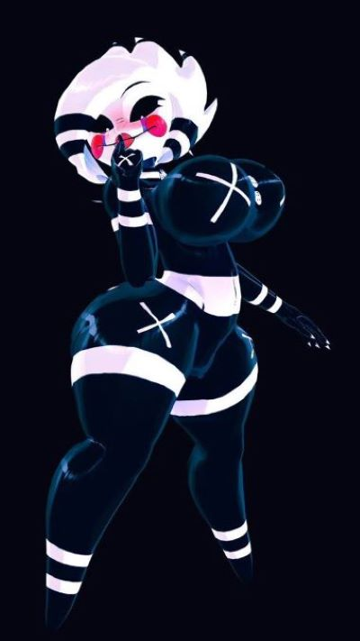
[CPX-055-5]
Nom : Marie
Apparence physique :
CPX-055-5 est une marionnette animatronique, possédant des courbes exagérées, mesurant 1m90 de
hauteur.
Sa silhouette est d'un blanc éclatant, ajoutant une aura d'innocence troublante à son
allure.
Elle porte une tenue en latex noire, moulante et serrée, qui accentue ses courbes
voluptueuses.
Elle aborde une croix blanche est visible sur chaque sein mais aussi sur ses hanches et ses
mains.
La tenue en latex laisse son ventre à découvert, attirant l'attention vers cette zone
suggestive.
Ses yeux sont complètement noirs avec un point blanc en guise de pupille.
Elle porte un maquillage exagéré.
Capacités techniques :
- Joints sophistiqués qui lui permettent de réaliser des mouvements fluides et réalistes,
offrant une performance de marionnette d'une grande précision et d'une grande expressivité.
- Uune technologie de reconnaissance vocale et de synthèse vocale de pointe, lui permettant de
répondre de manière intelligente avec une voix réaliste.
- Capteurs tactiles répartis sur son corps lui permettent de détecter et de réagir aux contacts
physiques.
- Équipés de caméras haute résolution et d'un système de traitement d'image sophistiqué.
- Yeux rétroéclairés ayant une possibilitée de vision nocturne.
- Système de chauffage interne qui lui permet de générer une sensation de chaleur agréable lors
des contacts physiques.
- Programme reproduisant des comportements humains réalistes, qu'il s'agisse de gestes, de
mimiques faciales ou d'expressions corporelles.
- Système de reconnaissance faciale avancé pour adapter le comportement de Marie en fonction des
utilisateurs.
• Les rôles :
Les rôles des animatroniques dans le NightClub pendant qu'il était encore ouvert.
[Show Girl]
Danceuse & Strip-Danceuse
[Show Girl]
Danceuse & Strip-Danceuse
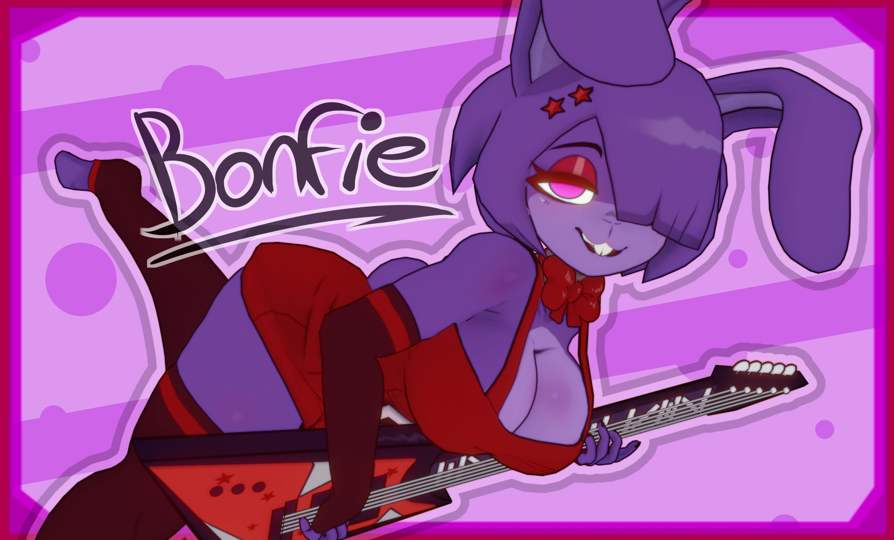
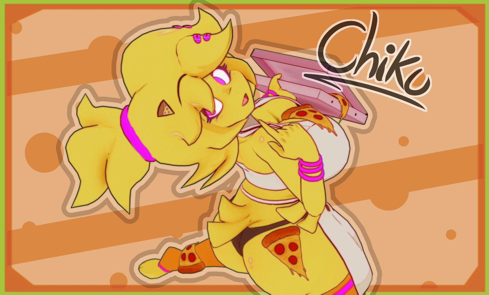
[Chef]
Cuisine & Service
[Bargirl]
Bar et boissons
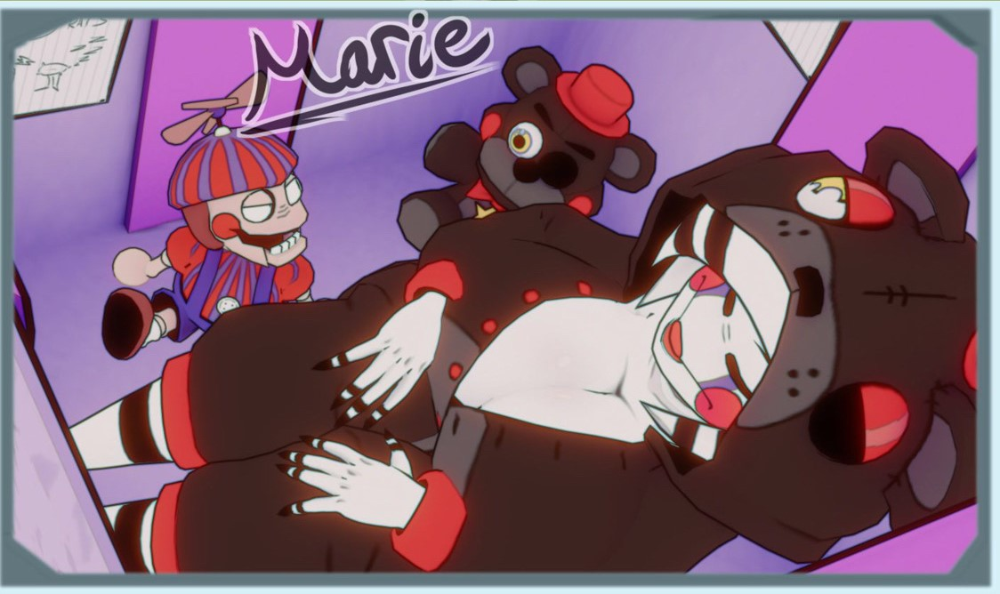
[Lurker]
Aguicheuse & Ambianceuse
• Posters :
Des poster trouvés dans les archives du Nightclub.
Ils sont maintenant stockés dans les quartiers de chaque animatronique correspondant.
• Illusion Disk :
Les disques d'illusion sont des disques plats, d'environ la taille d'une pièce de demi-dollar.
Ils donnent la possibilitée de donner une apparence humaine aux animatroniques.
Les disques utilisent cinq fréquences aiguës en constante évolution. Le bruit n'est détecté que par le
subconscient, qui se trouve submergé par les motifs.
Cela provoque un changement de perception chez les auditeurs, qui voient ce qu'ils s'attendent à voir, et
non la réalité. Un effet secondaire du bruit est de se sentir un peu malade.
Les disques ont une portée maximale et n'affectent pas la vision au-delà d'un certain point. Les images des
personnes affectées par les disques d'illusion apparaissent floues et déformées.
[Apparence Humaine]
• 1m90 •
[Apparence Humaine]
• 1m85 •
[Apparence Humaine]
• 1m85 •
[Apparence Humaine]
• 1m80 •
• Le bâtiment :
Le plan du NightClub
• :